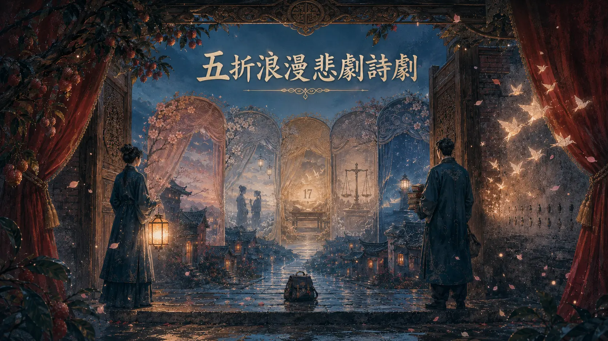
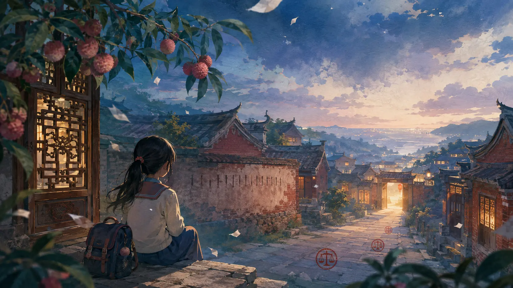

公開裁判資料には、拘禁、継続的な加害、死亡結果、再審による刑事責任の変化が記録されています。
福建・莆田・歴史事件
福建・莆田琪琪事件
村の入口で、母を待ち続けた
十二歳になる前、彼女が待っていたのは一人の人。
十二歳になったあと、残された人々は一つの答えを待っている。
「琪琪（仮名）」は公開報道で用いられている呼称です。母親が地元住民から聞いた話によれば、琪琪は村の入口に座り、母を捜しに行きたいと話していたとされます。これは裁判所が認定した事実ではありません。彼女の生涯が残酷な細部だけに置き換えられてはなりません。本特集は、村の入口、校門、閉ざされた扉、法廷という四つの地点をたどり、確認できる事実を整理するとともに、なぜ保護がもっと早く届かなかったのかを問い直します。
四言語特集・累計閲覧…回
記録をひらく
読む前に
まず、子どもを物語の中心に戻す
刑事責任と保護の綻びを理解するために必要な範囲だけを記します。傷害画像は掲載せず、暴力を再演せず、模倣につながりうる加害方法も詳述しません。今は児童虐待を扱う内容に触れることが難しいと感じるなら、ここで離れてかまいません。それは子どもを忘れることではありません。
裁判所の認定 ≠ 報道上の推測親族の伝聞 ≠ 法廷で認定された事実詩的な創作 ≠ 当事者の証言
3分でわかる概要
この事件を3分で把握する
裁判所の認定、親族・住民の伝聞、なお答えのない制度上の問いを分けてから、五幕の詩劇と記録本文へ進みます。
子どもの思いを伝える記憶ですが、裁判所が認定した事実ではありません。
退学、家出、複数回の通報が制度間でどう評価されたかは、公開資料だけでは十分にわかりません。
異常が繰り返し現れたとき、単発の対応で終わらせず、全体の危険をどう捉えるべきかを考えます。
資料区分の見方
裁判・司法資料親族または住民の伝聞編集分析と制度上の問い
事件案内
事件案内｜待つことから、残された制度上の問いへ
五幕のオリジナル詩劇を記録のあいだに置いています。ロマンと哀感を担うのは、成人の象徴的な語り手二人です。琪琪（仮名）や事件関係者を演じることも、恋愛物語に置き換えることもありません。

第一幕・春の帰還
第一幕・春帰る
花は約束どおりに咲く。それでも、待つ人に返事は届かなかった。


女・門を守る人野の花はまた春風を旧友と思い、村道に沿って一輪ずつ迎えに出る。それなのに、あの子が待つ人は、なぜいつも道の向こう側にいるのだろう。
男・記録を編む人私は法廷から、遅れて届いた春を一巻携えて帰った。紙には罪と刑が記されている。けれど、逃した抱擁を返せる頁は一枚もない。
女・門を守る人それなら、答えを持ち帰ったなどと言わないで。春の水は人影を映しても、ひとりの子どもがいくつの夕暮れを待ったかまでは映せない。
男・記録を編む人私はただ、記録の巻物を門前に置き、通る人すべてに足を止めてほしいと願う。待つこと自体が救難信号になっていたなら、誰が最初に耳を澄ますべきだったのか。
この幕は再生できます
第一幕の全台詞を読む
女：野の花はまた春風を旧友と思い、村道に沿って一輪ずつ迎えに出る。それなのに、あの子が待つ人は、なぜいつも道の向こう側にいるのだろう。
男：私は法廷から、遅れて届いた春を一巻携えて帰った。紙には罪と刑が記されている。けれど、逃した抱擁を返せる頁は一枚もない。
女：それなら、答えを持ち帰ったなどと言わないで。春の水は人影を映しても、ひとりの子どもがいくつの夕暮れを待ったかまでは映せない。
男：私はただ、記録の巻物を門前に置き、通る人すべてに足を止めてほしいと願う。待つこと自体が救難信号になっていたなら、誰が最初に耳を澄ますべきだったのか。
母を待っていたという話は、親族と住民による伝聞です
公開報道に登場する「琪琪（仮名）」は仮名です。実母の白さんは、裁判所から連絡を受けるまで娘の死亡を知らなかったと話しています。その後、現地住民から、琪琪（仮名）はよく村の入口に座り、母を探しに行きたいと話していたと聞いたといいます。
親族・住民による伝聞
「村の入口に座って待っていた」ことは、判決が認定した事実ではありません。この伝聞を残すのは、一人の子どもの思いを伝えるからです。同時に、証拠上の位置づけも明記します。
編集部からの問い
監護関係が変わり、親子の連絡が長く途絶え、または子どもの家出が繰り返されるとき、「言うことを聞かない」で済ませず、安全を確認する責任は誰にあるのでしょうか。
第二幕・出会い
第二幕・出会い
本当の出会いとは、目にすることではない。目の前の異変が語っていると認めることだ。


男・記録を編む人あなた、雨がこれほど激しいのに、なぜ空のランドセルを守っている？ 名札さえないのに、書き終えられなかった言葉を幾千も抱えているようだ。
女・門を守る人校門が閉じても、世界まで閉じてはならない。一度の欠席は空席にすぎなくても、繰り返す欠席は、文字のない手紙かもしれない。
男・記録を編む人私は、あなたのその頑ななまなざしに心を奪われた——通り過ぎる誰にも、自分は偶然ここを通っただけだと装わせない。
女・門を守る人なら、私の悲しみを愛さないで。まだ間に合う扉を愛して。沈黙する子どもに代わって、途切れた助けの声を最後まで伝えて。
この幕は再生できます
第二幕の全台詞を読む
男：あなた、雨がこれほど激しいのに、なぜ空のランドセルを守っている？ 名札さえないのに、書き終えられなかった言葉を幾千も抱えているようだ。
女：校門が閉じても、世界まで閉じてはならない。一度の欠席は空席にすぎなくても、繰り返す欠席は、文字のない手紙かもしれない。
男：私は、あなたのその頑ななまなざしに心を奪われた——通り過ぎる誰にも、自分は偶然ここを通っただけだと装わせない。
女：なら、私の悲しみを愛さないで。まだ間に合う扉を愛して。沈黙する子どもに代わって、途切れた助けの声を最後まで伝えて。
退学、家出、繰り返す通報を、別々の記録にしてはならない
中国中央電視台のニュースサイト「央視網」が第一審判決資料を引用して報じたところでは、2023年9月、「自願退学証明」に琪琪（仮名）の離校が記されました。また公安機関の資料は、2020年7月以降、家族が琪琪（仮名）の家出などを理由に複数回通報していたことを示しています。制度がこの事案に接触していたことは確認できますが、公開資料だけでは各回の対応を再現できません。
退学書類が作成されました。離校後の安全と教育の状況は、公開資料では十分に説明されていません。
家出などを理由とする通報が複数回ありました。繰り返し現れる危険信号は、まとめて評価する必要があります。
学校、警察、地域、児童福祉の各制度がどのように連携したのか、現存する公開資料からは十分に分かりません。
編集部による分析
接触したことは、全体を把握したことと同じではありません。一度の対応を終えたことも、危険が解消したことを意味しません。これは制度検証の方向を示すもので、特定の担当者の責任を認定するものではありません。
第三幕・十七の刻痕
第三幕・十七の刻痕
壁に被害の光景はない。ただ、一日ごとに開かれなかった扉の刻痕だけがある。


女・門を守る人なぜ月明かりの下で壁に刻むの？ 一つ、二つ、三つ……刻むたび、夜の闇が重くなる。
男・記録を編む人苦しみを数えているのではない。世界が「十七日」だけを覚え、一日ごとに扉を開ける機会があったことを忘れるのが怖いんだ。
女・門を守る人それなら筆を止めて。あなたの刻痕が人を驚かせるだけなら、また一度、子どもを人波の中から消してしまう。
男・記録を編む人筆を折って、扉だけを残そう。後から来る人が日数を数えるのではなく、最初の危険が現れたとき、その扉を押し開けられるように。
この幕は再生できます
第三幕の全台詞を読む
女：なぜ月明かりの下で壁に刻むの？ 一つ、二つ、三つ……刻むたび、夜の闇が重くなる。
男：苦しみを数えているのではない。世界が「十七日」だけを覚え、一日ごとに扉を開ける機会があったことを忘れるのが怖いんだ。
女：それなら筆を止めて。あなたの刻痕が人を驚かせるだけなら、また一度、子どもを人波の中から消してしまう。
男：筆を折って、扉だけを残そう。後から来る人が日数を数えるのではなく、最初の危険が現れたとき、その扉を押し開けられるように。
裁判所の認定：一度の暴走ではなく、継続した加害と放任だった
莆田市中級人民法院の第一審は、継母が未成年の家族3人を長期にわたり虐待したと認定しました。琪琪（仮名）が拘束され、浴室に17日間閉じ込められ、極度に衰弱していたにもかかわらず加害を続け、死亡させたとしています。法医学鑑定は、栄養不良を基礎に複数の要因が重なって生じた急性循環機能不全を示しました。
裁判所の認定
本ページは画像化せず、理解に必要な最小限の要約にとどめます。刑事責任の詳細は、公開判決と裁判所発表を基準としてください。
実父の刑事責任は、「止めなかった」ことだけではない
第一審は、実父が長期の虐待を知りながら制止せず、物品を提供して虐待を支持し、指示を受けて琪琪（仮名）に直接危害を加えたこともあると認定しました。共同の故意傷害の範囲で、死亡結果に相応する刑事責任を負うとしています。第二審はさらに、法定監護人でありながら監護義務を果たさず、加害に加わり、容認・放任したとして、原判決の量刑は「著しく軽い」と明示しました。
知っていたメッセージと写真が認識を示す加わった裁判所は直接の加害を認定支えた継続する虐待を支持・黙認救わなかった法定の監護・保護義務を履行せず
事後の清掃で事実を消すことはできない
判決資料には、事件後の着替え、現場の清掃、監視映像の削除、他者に「転倒した」という説明へ合わせるよう求めた行為も記されています。これらは、裁判所が主観的悪質性と証拠をどう評価したかを理解するための情報です。本ページでは、その場面を再現しません。

幕間・空の椅子彼女は退学証明、通報記録、判決書に書き込まれた。本当の保護とは、子どもがまだ空の椅子のそばにいるうちに、誰かが歩み寄ることだ。
第四幕・遅れて届いた裁き
第四幕・遅れて届いた裁き
法槌は刑の重さを正せても、子どもが保護を必要とした時には永遠に間に合わない。

男・記録を編む人十三年六か月と、重い朱印を携えてきた。世の人は、ようやく天秤が釣り合ったと言う。
女・門を守る人釣り合った？ 天秤のもう一方にあったのは、一生よ。すべての刑期を載せても、十二歳を十三歳まで育て直すことはできない。
男・記録を編む人それなら、私は何をあなたに捧げられる？ 名誉は役に立たず、判決は遅すぎる。最も厳粛な沈黙さえ、逃げているように思える。
女・門を守る人あなたのまなざしを捧げて。次の子どもが閉じ込められる前に、決して目をそらさないまなざしを——それこそ、裁きがなお残せる光。
男・記録を編む人判決の最終頁に朱印が下りた。許金花の死刑は認可・執行され、劉江も再審で懲役十三年六か月へ改められた。二人の加害者はついに法の裁きを受けた。それでも、奪われた歳月は戻らない。
女・門を守る人「裁きがついた」を歓声の句点にしないで。誓いとして記して——遅れて届いた正義のたびに、次の子どもの扉をもっと早く開くのだと。
この幕は再生できます
第四幕の全台詞を読む
男：十三年六か月と、重い朱印を携えてきた。世の人は、ようやく天秤が釣り合ったと言う。
女：釣り合った？ 天秤のもう一方にあったのは、一生よ。すべての刑期を載せても、十二歳を十三歳まで育て直すことはできない。
男：それなら、私は何をあなたに捧げられる？ 名誉は役に立たず、判決は遅すぎる。最も厳粛な沈黙さえ、逃げているように思える。
女：あなたのまなざしを捧げて。次の子どもが閉じ込められる前に、決して目をそらさないまなざしを——それこそ、裁きがなお残せる光。
男：判決の最終頁に朱印が下りた。許金花の死刑は認可・執行され、劉江も再審で懲役十三年六か月へ改められた。二人の加害者はついに法の裁きを受けた。それでも、奪われた歳月は戻らない。
女：「裁きがついた」を歓声の句点にしないで。誓いとして記して——遅れて届いた正義のたびに、次の子どもの扉をもっと早く開くのだと。
懲役五年六か月から、再審で十三年六か月へ
救急隊員が異常に気づいて通報し、被告二人は相次いで逮捕されました。
許金花について故意殺人罪と虐待罪により死刑を執行刑とし、劉江について故意傷害罪と虐待罪により懲役五年六か月を執行刑としました。
上訴を棄却し、原判決を維持。劉江の故意傷害罪の量刑は著しく軽いと認めたものの、「上訴不加刑」の原則によりこの審級では重くできないため、別途、審判監督手続を開始しました。
故意傷害罪を懲役十三年に変更し、虐待罪の懲役一年は維持。執行刑を懲役十三年六か月、政治的権利の剥奪二年としました。
最高人民法院が許金花の死刑を認可し、莆田市中級人民法院が法に基づき執行しました。
司法手続の説明
第二審が「軽すぎると知りながら放置した」のではありません。裁判所は上訴不加刑の原則に拘束されて原判決を維持したうえで、別途、審判監督手続による再審で判決を変更しました。本件の司法経路を理解するうえで重要な点です。
第五幕・灯を残す
第五幕・子どもに灯を残す
ロマンが苦しい待ち時間を讃えるのではなく、どの子も諦めないという約束になりますように。
女・門を守る人もうすぐ夜が明ける。あなたの手の灯は、亡くなった人のため？ それとも、今も闇の中にいる人のため？
男・記録を編む人追悼だけを照らすなら、遅すぎる。校門、診察室、警察署、そして閉ざされた一つひとつの家の扉を照らせるとき、初めて光と呼べる。
女・門を守る人それなら、私と来て。永遠を約束しないで。ただ、危険信号のたびに誰かが振り返り、通報のたびに次の一歩があると約束して。
二人・灯を残す待つことが、もう子どもの宿命になりませんように。最初の扉が閉じる前に、保護が届きますように。
男・記録を編む人分かった。本当の常夜灯は、彼女の名だけを照らすのではない。助けを言葉にできず、今も扉の向こうで誰かを待つ子どもたちを照らす。
二人・朝の光彼女が判決文の一行だけになりませんように。生きられなかった歳月が、もう目をそらさない勇気になりますように。夜明けから先、すべての灯に差し出す手がありますように。
この幕は再生できます
第五幕の全台詞を読む
女：もうすぐ夜が明ける。あなたの手の灯は、亡くなった人のため？ それとも、今も闇の中にいる人のため？
男：追悼だけを照らすなら、遅すぎる。校門、診察室、警察署、そして閉ざされた一つひとつの家の扉を照らせるとき、初めて光と呼べる。
女：それなら、私と来て。永遠を約束しないで。ただ、危険信号のたびに誰かが振り返り、通報のたびに次の一歩があると約束して。
二人：待つことが、もう子どもの宿命になりませんように。最初の扉が閉じる前に、保護が届きますように。
男：分かった。本当の常夜灯は、彼女の名だけを照らすのではない。助けを言葉にできず、今も扉の向こうで誰かを待つ子どもたちを照らす。
二人：彼女が判決文の一行だけになりませんように。生きられなかった歳月が、もう目をそらさない勇気になりますように。夜明けから先、すべての灯に差し出す手がありますように。
本当の追悼とは、点在する危険信号を保護への道につなぐこと
刑罰は誰が刑事責任を負うかに答えます。しかし、子どもの死亡事例検証に代わるものではありません。琪琪（仮名）事件が残した制度上の問いは、「長期間の連絡断絶」「繰り返す家出・通報」「学校からの離脱」「閉ざされた養育環境」、そして「複数の制度に断片だけが残ること」のあいだにあります。
未成年者の離校後、教育と児童福祉の制度は、教育、居住、人身の安全を確認すべきです。一枚の書類で手続を終えてはなりません。
家出、負傷、飢え、恐怖、頻繁な通報が重なるなら、部門横断のリスク評価へ引き上げる必要があります。
案件が引き継がれたことは、子どもの安全を意味しません。担当者、期限、検証可能な再確認が必要です。
匿名化したうえで各制度との接点を再構成します。誰かを吊し上げるためではなく、次にもっと早く介入できる地点を探すためです。
制度分析・提言
以上は、公開資料に基づき本特集が提示する改革の方向です。裁判所が学校、警察、地域、その他の機関の職務上の責任を認定したという意味ではありません。
子どもに危険があるかもしれないとき
異変が繰り返されているなら、一人で最後まで判断しないでください
子どもが今まさに危険にさらされている場合は、所在地の緊急通報先または警察へ連絡してください。差し迫った危険でなくても、地域の児童福祉、教育、社会サービス機関へ具体的な記録を残せます。日付、あなたが直接見聞きしたこと、すでに取った行動を記録してください。子どもに同じ話を何度も求めたり、加害の可能性がある人と自分で対峙したりしないでください。
このサイトの子どもを守る行動へ戻る出典・編集方針
資料の出典と編集上の境界
司法結果は、裁判所発表とその権威ある転載を優先しました。生前の生活に触れる部分では、判決資料と親族・住民による伝聞を明確に区別しています。
判決資料・報道整理｜2025.09.14央視網｜第一審判決、17日間の拘禁、実父の関与第一審の罪名、刑、法医学鑑定の要約、証拠に関する行為、監護人の認識・関与の確認に使用。
福建省高級人民法院発表・央視網｜2025.11.11第二審が原判決を維持し、審判監督手続を開始上訴不加刑、原判決の量刑が著しく軽いとの判断、再審経路の確認に使用。
福建省高級人民法院発表・中国新聞網｜2026.01.20再審による判決変更と死刑の認可・執行劉江の懲役十三年六か月、政治的権利の剥奪、許金花の死刑執行日の確認に使用。
親族・住民による伝聞｜2025.09.16上観新聞｜生前、母を待っていたという実母の伝聞村の入口で待っていたという段落にのみ使用し、裁判所の認定としては扱っていません。
命名：「琪琪（仮名）」は仮名です。本ページは実名を調査・公開しません。
詩劇：「門を守る人」と「記録を編む人」は成人の象徴人物であり、琪琪（仮名）、親族、被告、証人、司法関係者ではありません。すべての台詞は本サイトによるオリジナルの創作で、証言ではありません。
画像：福建の集落、空のランドセル、扉、記録、17本の抽象的な刻痕、灯を象徴として用い、被害を視覚化しません。
地域：サイト上の地域分類は情報検索のためだけに使用し、政治的・主権的・法的地位についての立場を示すものではありません。